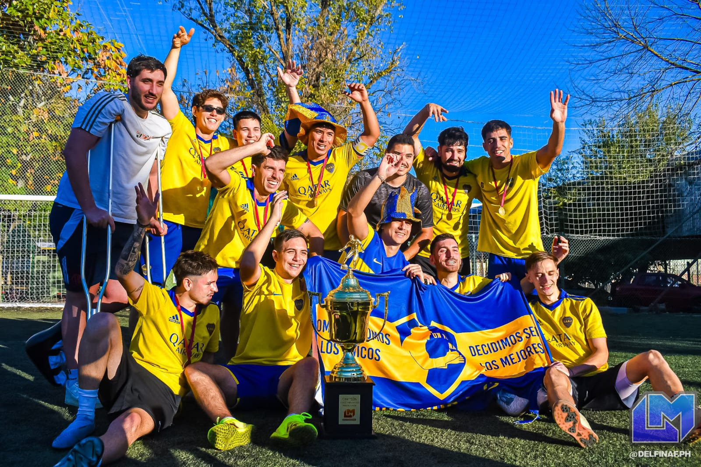

🏆 ¡UN POQUITO MA ES EL NUEVO CAMPEÓN DEL APERTURA 2025!
¡La historia se volvió a escribir! En una noche cargada de emoción, tensión y puro fútbol de potrero, Un Poquito Ma se coronó como el flamante campeón del Torneo Apertura 2025 tras vencer por penales (2-0) a Los Nenes, luego de empatar 1-1 en el tiempo reglamentario. El partido fue una verdadera batalla futbolística, con momentos de alto voltaje, roces, lujos y un cierre digno de una final de película.
El camino hacia la gloria no fue casualidad. Un Poquito Ma clasificó a la fase final como líder absoluto, con 17 puntos, producto de 5 victorias, 0 empates y 2 derrotas en los 7 partidos de la fase regular. Una campaña sólida, que mostró desde el inicio que este equipo tenía con qué pelear arriba.
En la final, el gol tempranero de Los Nenes puso en aprietos al campeón, pero con garra, corazón y fútbol del bueno, lograron igualar las acciones antes del descanso. En el segundo tiempo, ambos equipos buscaron el triunfo con alma y vida, pero fue el destino —y los penales— quien escribió el desenlace.
Diego Maggi, el héroe de la jornada, se vistió de gigante bajo los tres palos: atajó dos penales decisivos y fue ovacionado por todo el estadio. El arquero, apodado “El Muro”, se convirtió en leyenda. A su lado, Julián Martínez, el goleador del torneo, volvió a brillar y confirmó su chapa de crack con una actuación destacada y una personalidad que arrastró a todo el equipo hacia la gloria.
Desde los primeros partidos hasta la gran final, Un Poquito Ma mostró un estilo de juego sólido, con toques de magia, inteligencia táctica y una mística que fue creciendo jornada a jornada. El vestuario habla de una familia unida, un grupo que supo sufrir y disfrutar cada paso. El campeonato no solo se ganó en la cancha, sino también en los asados, las charlas post partido y en cada entrenamiento con olor a tierra mojada.
Con esta consagración, el club entra en la historia grande del torneo, y ya se empieza a hablar de una nueva era dorada. ¡Salud, campeones!